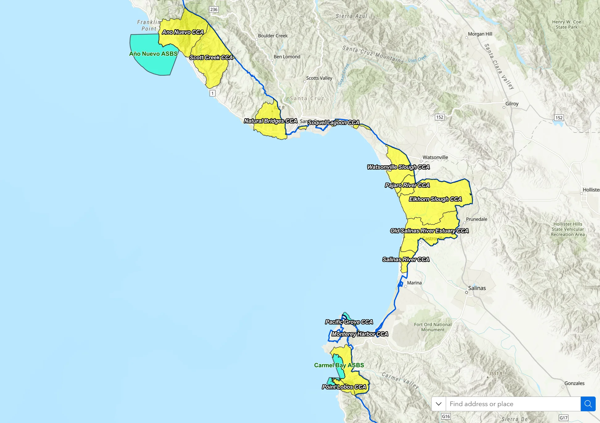
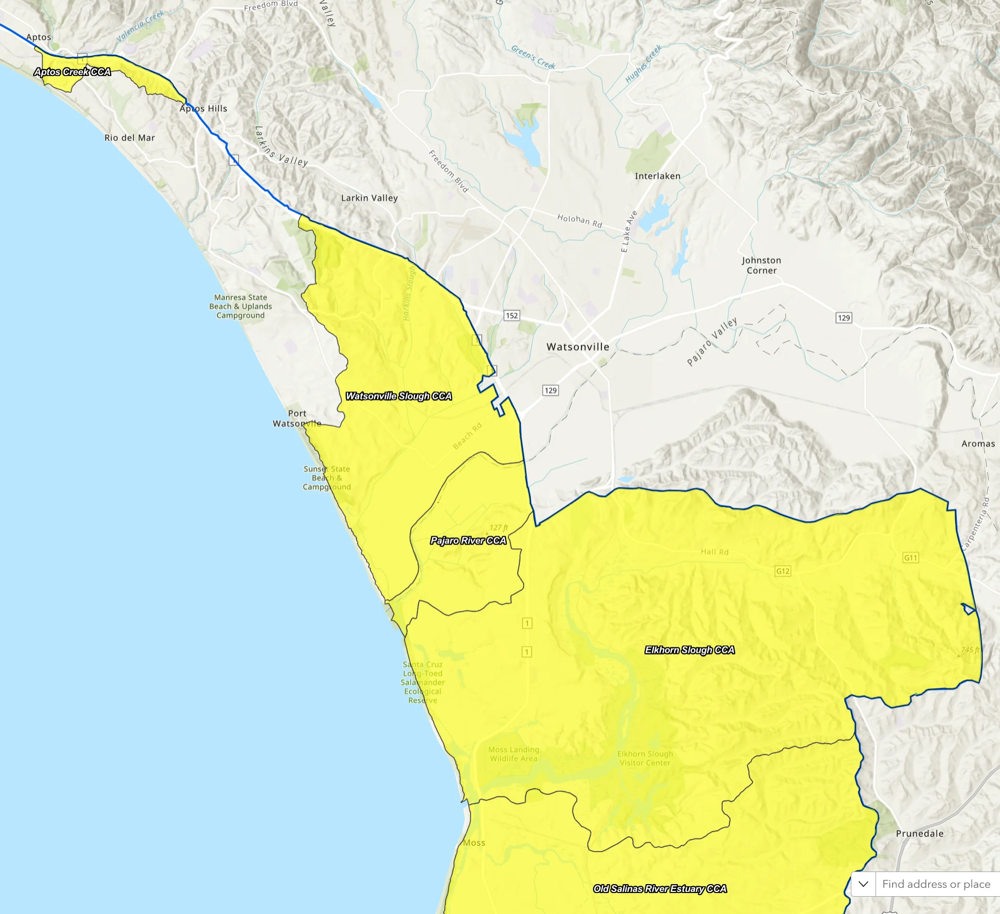
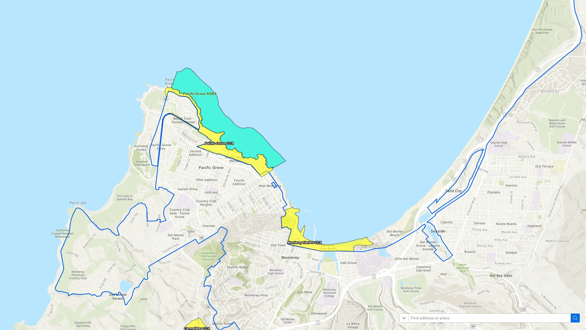
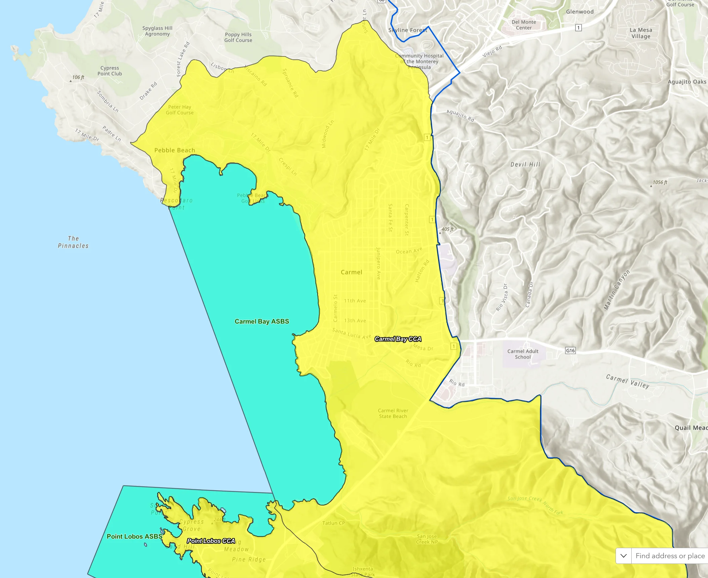

You got your building permit from the city. You hired a contractor. You are ready to break ground. Then someone mentions the California Coastal Commission — and suddenly everything stops. This happens more often than you would think on the Central Coast, and it catches homeowners completely off guard.
The Coastal Commission is not your local planning department. It is a state agency with independent authority to approve, deny, or fundamentally change any construction project within the coastal zone — and it can override what your city or county already told you was fine. If your property sits inside the coastal zone, understanding how the Commission works is not optional. It is the difference between a project that gets built and one that costs you two years and $50,000 in delays before it gets killed.
What Is the California Coastal Commission?
The California Coastal Commission was created by voter initiative in 1972 and made permanent by the California Coastal Act of 1976. Its mission is to protect and enhance the state's coastal resources — public access to the beach, ocean views, sensitive habitat, wetlands, and the visual character of the coastline. The Commission has twelve voting members appointed by the Governor and the state legislature, none of whom are elected by the people who live in coastal communities.
The Commission operates through a permit process called the Coastal Development Permit, or CDP. In most of California's coastal zone, your local city or county issues CDPs under a Local Coastal Program that the Commission has certified. But the Commission retains the ability to hear appeals of those local decisions — and it has original jurisdiction over certain types of projects regardless of what local governments say.
"The Coastal Commission does not just review permits. It has the legal authority to overrule your city's planning department, your county's building department, and in some cases, other state agencies."
Where the Coastal Zone Is on the Central Coast
The coastal zone is a strip of land running along California's entire 840-mile coastline. The width varies — in urban areas it can be as narrow as a few hundred feet from the mean high tide line, but in some rural and sensitive habitat areas it extends inland several miles. On the Central Coast, the zone covers significantly more territory than most people expect.

The Coastal Commission's jurisdiction covers the coastal zone across Santa Cruz, Monterey, Santa Clara, and San Benito counties.
Here is how the coastal zone plays out across the four counties Peninsula Construction serves:
| County | Coastal Zone Character | Key Jurisdictions |
|---|---|---|
| Santa Cruz County | High density coastal zone. Extends from the shoreline through most of Santa Cruz city, Capitola, Aptos, and Soquel Creek corridor. | City of Santa Cruz, Capitola, Aptos, Soquel, Watsonville (partially) |
| Monterey County | Vast coastal zone. Big Sur's zone extends miles inland due to habitat sensitivity. Carmel, Pacific Grove, and Monterey city largely within the zone. | Carmel, Monterey, Pacific Grove, Seaside, Salinas (edge) |
| Santa Clara County | Narrow coastal zone primarily along the Guadalupe River and shoreline near Alviso. Most of Silicon Valley is outside the coastal zone. | Small portion near South Bay shoreline |
| San Benito County | No direct Pacific coastline. Not within the coastal zone. Hollister and Tres Pinos are outside Commission jurisdiction entirely. | Not applicable |
Santa Cruz: Living Inside the Coastal Zone
Santa Cruz County is one of the most heavily regulated coastal jurisdictions in California. The City of Santa Cruz has a certified Local Coastal Program, which means local planners handle most CDPs — but any local decision can be appealed to the Commission within 10 working days. The unincorporated county areas are in a more complicated position: parts of the county's LCP are still not fully certified, which means the Commission retains original permit authority over those areas and every decision goes to the state level first.

The coastal zone in Santa Cruz extends well inland from the shoreline, covering large portions of the city and county.
If you own property in Live Oak, Pleasure Point, Seacliff, Rio del Mar, or anywhere near the Pajaro River mouth, you are almost certainly in the coastal zone. So is most of the west side of Santa Cruz city, the Westside bluffs, and the area around Natural Bridges.
Watsonville and Moss Landing
The Watsonville area and the Moss Landing corridor carry some of the most sensitive coastal designations on the Central Coast. Elkhorn Slough — one of the largest estuarine wetland systems on the West Coast — creates an expanded coastal zone that extends several miles inland. Any project near the slough, the wetland buffer areas, or the Pajaro River estuary is subject to intense Commission scrutiny.

Watsonville sits at the edge of the coastal zone, with Elkhorn Slough creating extended jurisdiction inland.

Moss Landing and the Elkhorn Slough corridor carry some of the highest-sensitivity coastal designations on the Central Coast.
Monterey and Carmel
Monterey and Carmel are almost entirely within the coastal zone. The City of Monterey has a certified LCP and handles most permit decisions locally, but projects involving view corridors, historic resources, or proximity to the bay are frequent targets for Commission appeals. Carmel-by-the-Sea is known for having some of the most stringent design review in California — the Commission adds another layer on top of that.

The City of Monterey and surrounding areas sit fully within the coastal zone, with the bay creating direct Commission jurisdiction over shoreline properties.

Carmel and Point Lobos are among the most regulated coastal areas in California. Projects near the shoreline and Carmel River mouth face the highest scrutiny.
How the Commission Can Override Local Decisions
This is the part most homeowners do not know about until it is too late. Even after your city or county approves a project, the Commission can step in. Here is exactly how it works:
The 10-Day Appeal Window
After a local agency issues a Coastal Development Permit, any member of the public, any Commissioner, or the executive director of the Commission can file an appeal within 10 working days. The appeal goes to the full Commission for a hearing. If the Commission votes that the appeal raises a "substantial issue," the project is on hold while the Commission conducts its own full review — which can take months to years.
The grounds for a successful appeal are broad. The Commission can find a substantial issue based on:
- Public access to the beach or shoreline being impaired
- Ocean or coastal views being blocked
- Environmentally sensitive habitat areas (ESHA) being disturbed
- Inconsistency with the policies of the Coastal Act, even if the local LCP allows the project
- Cumulative impacts on coastal resources
- Water quality concerns affecting the ocean or wetlands
Beyond appeals, the Commission has direct permit authority — not just appellate authority — over certain categories of projects regardless of local certification status. These include projects on public trust lands, projects affecting wetlands, projects in areas where the LCP has not been certified, and projects involving major public works.
What Types of Projects Get Killed or Delayed
Not every project in the coastal zone gets flagged. The Commission focuses its energy on projects that raise the issues it was created to protect. Based on the patterns we see on the Central Coast, here is what tends to get the most scrutiny:
- Seawalls and armoring. The Commission strongly opposes hard armoring of the shoreline because it accelerates beach erosion and eliminates public access. Projects involving sea walls, rip rap, or any structure that "armors" coastal bluffs face an extremely high denial rate. The Commission's current policy actively promotes managed retreat — letting bluffs erode naturally rather than armoring them.
- Second-story additions with ocean views. If a neighbor can credibly argue that your addition blocks a coastal view corridor, expect an appeal.
- New construction near wetlands. Any project within 100 feet of a wetland, stream, or ESHA requires a detailed biological assessment. The Commission often requires larger buffers than local codes.
- ADUs in the coastal zone. The state ADU law streamlined most ADU permitting, but coastal zone properties can still face additional Commission review, especially for new detached units near sensitive habitats or public access paths.
- Demolition of existing structures. Tearing down an existing home and rebuilding larger can trigger full Commission review even when local planners approve the replacement plans.
"We have seen projects in Santa Cruz sit in Coastal Commission review for three to five years. In the worst cases the project was denied entirely after the homeowner had already spent six figures on design, surveys, and legal fees."
Real Timelines: What to Expect
If your project triggers Commission review, plan your schedule around these realities:
| Scenario | Typical Timeline |
|---|---|
| Local CDP only, no appeal filed | 4 to 12 weeks (standard local process) |
| Local CDP appealed to Commission, appeal found insubstantial | Add 2 to 4 months |
| Appeal found substantial, Commission takes jurisdiction | Add 6 to 18 months |
| Commission original jurisdiction (no certified LCP in place) | 8 to 24 months from application |
| Controversial project near sensitive habitat or shoreline | 2 to 7 years, possible denial |
How to Build Successfully in the Coastal Zone
None of this means you cannot build in the coastal zone. Thousands of projects get approved every year. The key is knowing what you are dealing with before you commit to a design and before you spend money on plans that may need to be completely redesigned to satisfy the Commission.
- Find out early whether your property is in the coastal zone. The Commission's website has a mapping tool. Your local planning department can also tell you. Do not assume you are outside the zone just because you are not directly on the water.
- Understand your Local Coastal Program. If your city or county has a certified LCP, local planners are your first point of contact. Read the LCP policies that apply to your property before you design anything.
- Work with a contractor who has coastal zone experience. Projects designed by someone unfamiliar with Coastal Act policies routinely get redesigned at significant cost after the Commission weighs in.
- Consider a pre-application meeting. The Commission's district offices (the Central Coast district office is in Santa Cruz) will meet informally with applicants before a formal application is filed. This meeting can surface fatal problems early when they are still cheap to fix.
- Plan for public access requirements. If your project is near the water, the Commission will likely condition any approval on a public access easement along the shoreline. Factor that into your planning.
The Central Coast District Office
The California Coastal Commission's Central Coast District Office handles permitting for Santa Cruz and Monterey counties. It is located in Santa Cruz. Staff planners there are knowledgeable and generally willing to have preliminary conversations before a formal application. If you are facing a coastal zone project, starting that conversation early is one of the best moves you can make.
What This Means for Peninsula Construction Clients
Richard Rodriguez has been building on the Central Coast for over 30 years. A large portion of that work has been in the coastal zone — ADUs in Santa Cruz, additions in Capitola, garage conversions in Aptos, new builds in Monterey. That experience means we know which projects sail through local review, which ones are likely to attract Commission scrutiny, and how to design around the issues that get projects killed.
We do not just build. We help clients understand what they are actually dealing with from the start, so there are no surprises after they have committed to a project that the Coastal Commission was never going to approve as designed.
If you have a property in the coastal zone and you are thinking about any kind of construction — addition, ADU, garage conversion, new build — the conversation about the Coastal Commission needs to happen at the very beginning. Contact Peninsula Construction for a free consultation and we will tell you straight what your project is likely to face.